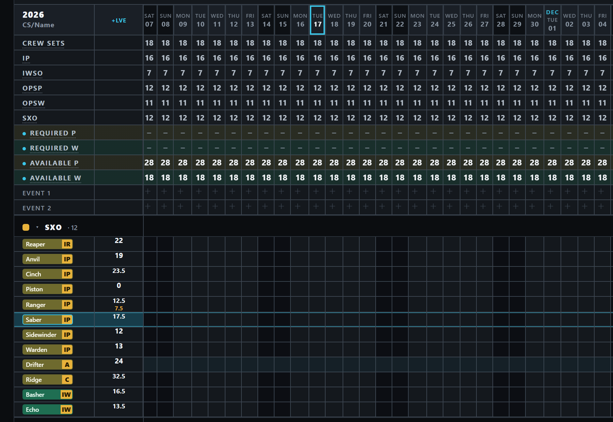
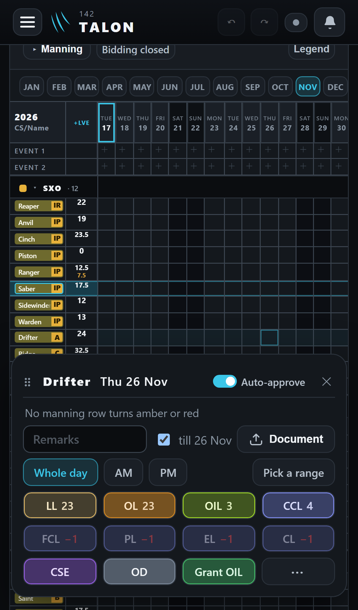

<title>Leave War Grid Highlight</title>
<meta name="claude:viewport-fit-sides" content="cover">
<style>
/* One column of questions over real pictures; dark like the app itself. */
:root{--bg:#0d1117;--panel:#161b22;--edge:#2a313b;--ink:#e8edf2;--ink2:#9aa6b2;--cyan:#3BC6E8;--red:#ff4d4d;color-scheme:dark;
--sans:"Inter",system-ui,-apple-system,"Segoe UI",sans-serif}
body{background:var(--bg);color:var(--ink);font-family:var(--sans);font-size:16px;line-height:1.5;
padding-left:max(16px,env(safe-area-inset-left,0px));padding-right:max(16px,env(safe-area-inset-right,0px));padding-block:20px 48px}
main{max-width:980px;margin:0 auto;display:grid;gap:24px}
h1{font-size:22px;margin:0;text-wrap:balance}
h2{font-size:17px;margin:0 0 6px}
p{margin:0;max-width:68ch}
.ask{background:var(--panel);border:1px solid var(--cyan);border-radius:10px;padding:16px;display:grid;gap:10px}
.ask ol{margin:0;padding-left:22px;display:grid;gap:6px}
.rec{color:var(--cyan);font-weight:600}
.shot{display:grid;gap:8px;align-content:start}
.frame{position:relative;border:1px solid var(--edge);border-radius:8px;overflow:hidden}
.frame img{display:block;width:100%;height:auto}
.mk{position:absolute;border:3px solid var(--red);border-radius:4px;pointer-events:none}
.tag{position:absolute;background:var(--red);color:#fff;font-weight:700;font-size:13px;padding:1px 7px;border-radius:10px;pointer-events:none;white-space:nowrap}
.pair{display:grid;grid-template-columns:1fr;gap:28px;align-items:start}
@media(min-width:760px){.pair{grid-template-columns:1.6fr 1fr}}
.cap{color:var(--ink2);font-size:14px}
a{color:var(--cyan)}
</style>
<main>
  <h1>Leave War grid — the highlight under the mouse</h1>

  <section class="ask">
    <h2>One question before I draw anything</h2>
    <p>I read your message as: <b>when the mouse is over a box on the grid (or you tap a box on the phone), light up that box's whole row and whole column</b>, so your eye can follow it across to the name and up to the date. Today only a very faint tint runs along the row (A below), and nothing marks the column.</p>
    <p>You said you already have a cyan highlight on the grid lines that follows. I found two cyan lines today and am not sure which you mean:</p>
    <ol>
      <li><b>A</b> — the faint cyan tint along the row under the mouse (it moves with the mouse, but it is hard to see).</li>
      <li><b>B</b> — the cyan lines above and below <b>your own row</b> (Saber here). They stay on your row; they do not move.</li>
    </ol>
    <p class="rec">My reading: you want the B look — clear cyan lines — to follow the mouse (or your tap), along the row <i>and</i> down the column, with the name and the date at the top lit to match. Is that right? A yes, or a short correction, and I will draw 2–3 versions on the real app, phone and desktop.</p>
  </section>

  <div class="pair">
    <section class="shot">
      <h2>1 · Desktop today, mouse over Drifter, Thu 26 Nov</h2>
      <div class="frame">
        
        <div class="mk" style="left:23.2%;top:84.4%;width:76.6%;height:3.8%"></div>
        <div class="tag" style="left:24%;top:89.2%">A · faint row tint (follows the mouse)</div>
        <div class="mk" style="left:1.6%;top:73.7%;width:98%;height:3.8%"></div>
        <div class="tag" style="left:40%;top:69.6%">B · your own row's cyan lines</div>
      </div>
      <p class="cap">Real app, your PC's size. No mark on the column or on the date at the top.</p>
    </section>
    <section class="shot">
      <h2>2 · iPhone today, Thu 26 Nov tapped on Drifter</h2>
      <div class="frame">
        
        <div class="mk" style="left:72.2%;top:53.6%;width:6%;height:3.4%"></div>
        <div class="tag" style="left:50%;top:50.6%">the tapped day's box</div>
        <div class="mk" style="left:2.6%;top:45.8%;width:95%;height:2.8%"></div>
        <div class="tag" style="left:30%;top:42.8%">B · your own row</div>
      </div>
      <p class="cap">Real app, your iPhone's size. The tapped day gets its cyan box; the row and column are not lit.</p>
    </section>
  </div>
</main>
